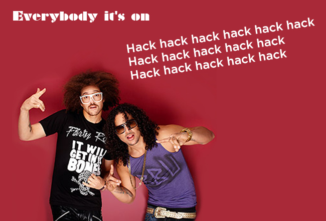
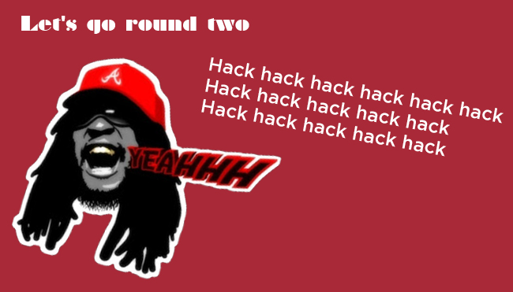

|  | ||||||
As many of you have heard Daniel, Corey, Caleb and I have been selected to participate in the WORLD’S FIRST GLOBAL VIRTUAL #HACKATHON. You may have even seen Terri's email about providing us with sweet sustenance during our Mountain Dew Code Red and Pizza induced 48 hour marathon of coding.
1. Problems facing our planet, explained using interactive data visualization. (e.g. climate change, earthquakes, food/water waste, etc.)
We have a suggestion bucket in our area to drop off any ideas that you have. Of course, if you just want to come over and chat that would be okay too!
Here is a link if you want to geek out and learn more about the #Hackathon |
||||||
|  | ||||||